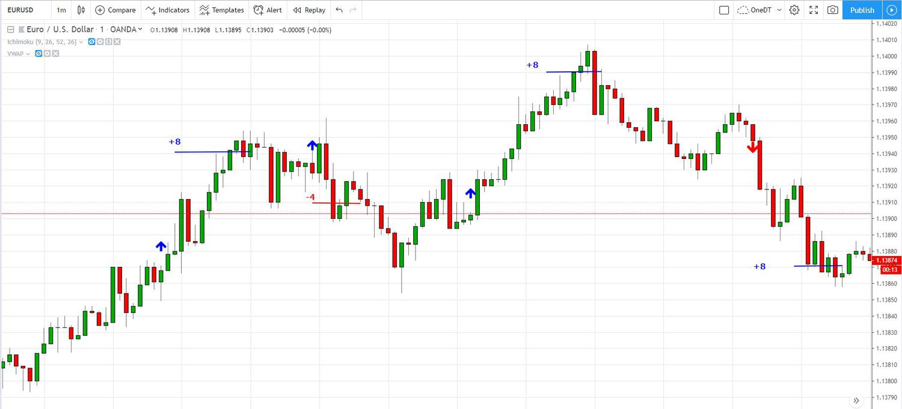
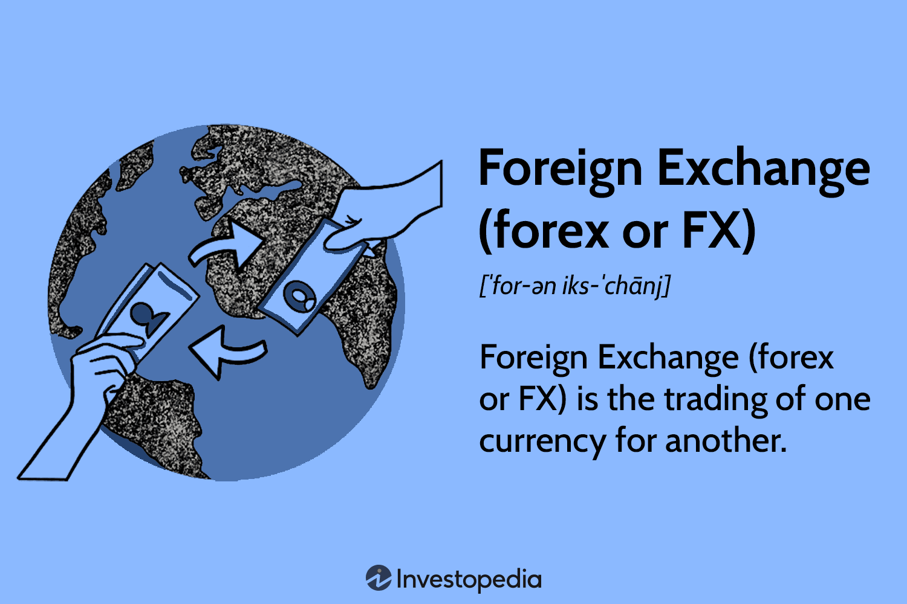
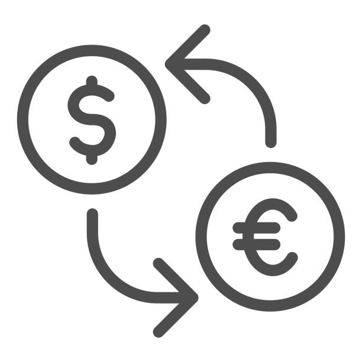

Foreign Exchange Trading
Master the art of forex trading with disciplined practice and continuous learning
Trading Schedule
Active Trading Sessions
Monday - Friday: 15:30 - 16:30
Dedicated 1-hour focused trading sessions during weekdays
- Pre-market analysis (10 minutes)
- Active trading session (40 minutes)
- Post-session review and journaling (10 minutes)
Study & Analysis
Saturday: 13:00 - 15:00
2-hour dedicated learning and strategy development session
- Market analysis and chart review
- Trading strategy backtesting
- Educational content consumption
- Trading journal analysis

Technical Analysis
Master chart patterns, indicators, and market trends to make informed trading decisions.

Market Analysis
Stay updated with global economic events and their impact on currency movements.

Risk Management
Implement proper risk management strategies to protect your trading capital.
Key Trading Principles
Risk Management
Never risk more than 1-2% of your account per trade. Preserve capital for long-term success.
Discipline
Stick to your trading plan and time limits. Emotional trading leads to losses.
Continuous Learning
Use study time to constantly improve your skills and adapt to market changes.
Record Keeping
Maintain a detailed trading journal for all trades to track performance and learn from mistakes.
Daily Trading Checklist
Pre-Trading (10 minutes)
During Trading (40 minutes)
Post-Trading (10 minutes)
Today's Progress
0/12 tasks completed
Stay disciplined and follow your plan!
Major Market Sessions
London Session
08:00 - 17:00 GMT
High volatility, major EUR/GBP movements
New York Session
13:00 - 22:00 GMT
USD pairs most active, news releases
Tokyo Session
00:00 - 09:00 GMT
JPY and AUD pairs, Asian market focus
Sydney Session
22:00 - 07:00 GMT
AUD/NZD pairs, commodity currencies